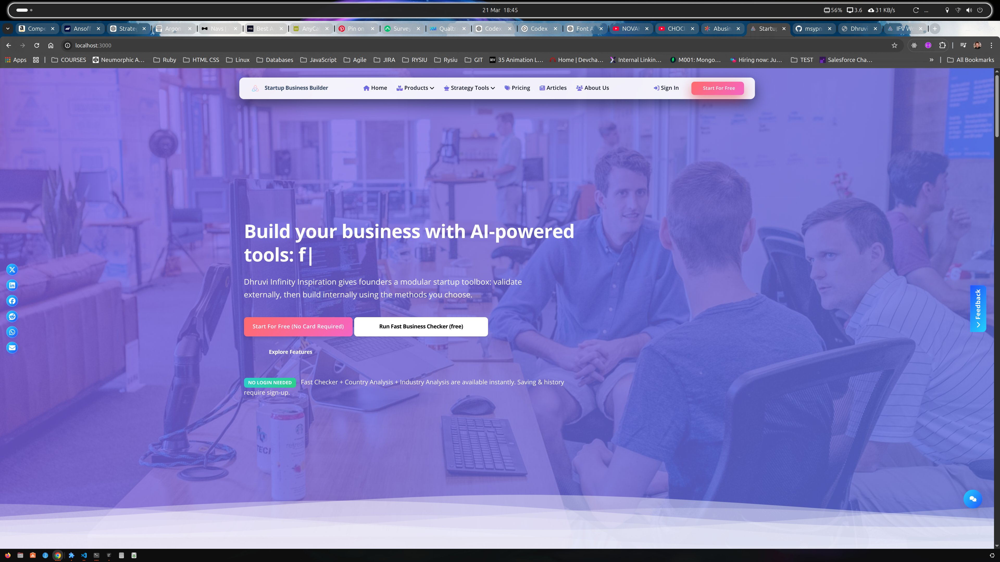
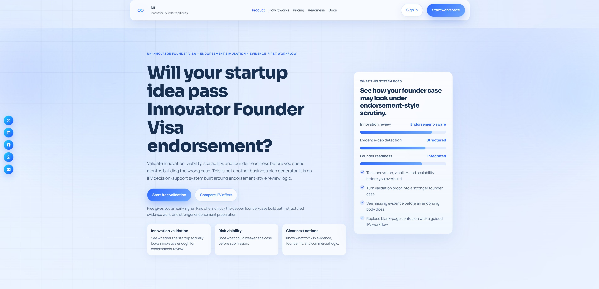
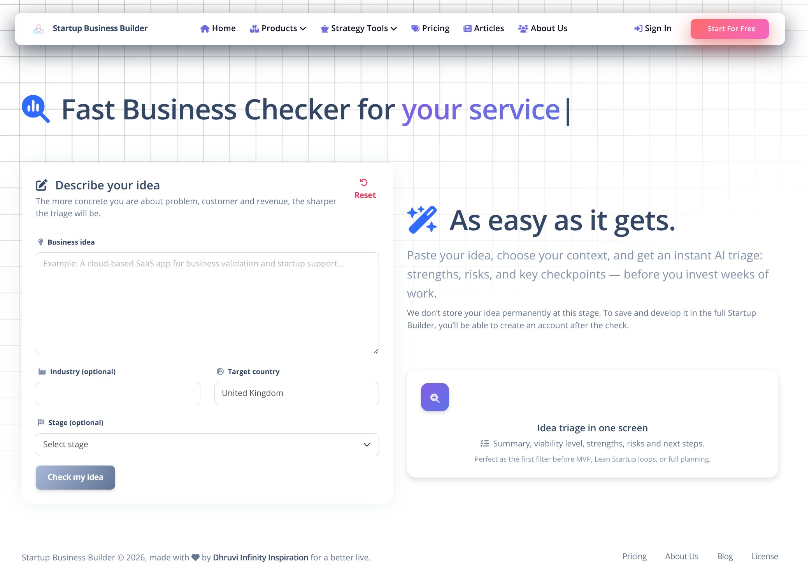
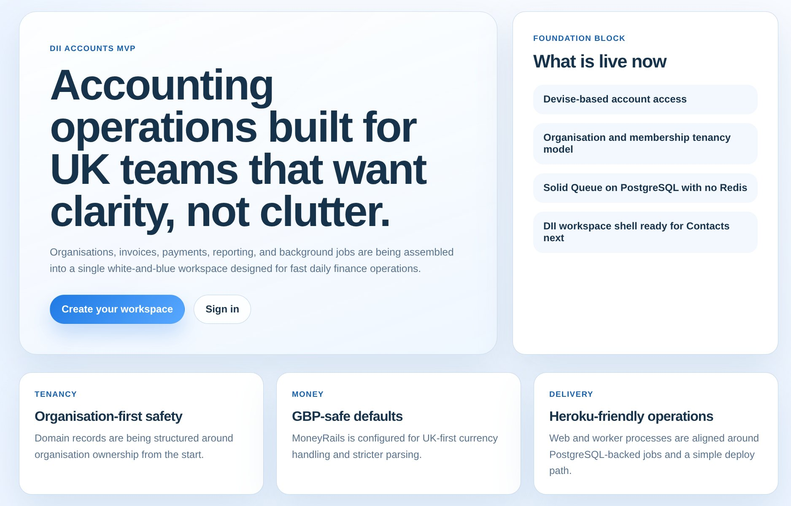

One company. Multiple systems. A cleaner way to build and run real businesses.
Dhruvi Infinity Inspiration Ltd. brings together connected SaaS products for founders and operators: Startup Business Builder, IFV Builder, Rotaplan, Warewise, DII Accounts, and an expanding knowledge base for smarter decisions.
Choose a product if you already know the problem, follow the journey if you want to see how the tools connect, or ask DII for guidance if you want help choosing the right route.
Founder tools
Validate ideas, structure plans, and move toward launch with
guided workflows.
Operational systems
Support shift planning, logistics control, and business
execution with simpler software.
Finance layer
Bring invoices, payments, reporting, and account access into
the wider DII workspace.
DII ecosystem
From business idea to daily operations and finance
DII brings the product family into one view, helping founders and operators understand where to start and how planning, operations, and finance tools connect as they grow.



One ecosystem for founders, operators, and growing teams
DII brings the product family into one place so visitors can see how idea validation, visa support, operations software, accountancy tooling, and a growing knowledge layer connect across the business journey.
Startup Business Builder, IFV Builder, Rotaplan, Warewise, and DII Accounts are available today for direct exploration.
Guides, solution pages, and explainers are being shaped to help people choose the right route before they need software or support.
Start with an idea
Use structured tools to test viability, understand markets, and turn ideas into stronger ventures.
Build a real plan
Move from vague ambition to frameworks, forecasts, strategy, and launch-ready documentation.
Run operations
Support workforce planning and warehouse control with practical software for real workflows.
Control finance
Bring invoices, payments, reporting, and organisation-level finance workflows into a clearer daily workspace.
Founder layer
Startup Business Builder, IFV Builder, and strategic planning
support.
Ops layer
Rotaplan, team organisation, inventory, and warehouse
control.
Finance layer
DII Accounts, reporting, payments, and accountancy
operations.
Content layer
Business guides, visa paths, know-how articles, and a solution
center.
The DII product family
Use Startup Business Builder for general founder planning, IFV Builder for visa-path preparation, Rotaplan or Warewise for daily operations, and DII Accounts for accountancy and reporting. This section also shows what you can verify today before you click through.
Startup Business Builder, IFV Builder, Rotaplan, Warewise, and DII Accounts can all be opened directly from this page.
General, sales, support, legal, and IFV-specific contact routes are all visible on the homepage.
The site lists 86–90 Paul Street, London, EC2A 4NE as the company address alongside the wider ecosystem routes.
Founder planning
Go straight to Startup Business Builder.
IFV preparation
Open the visa-focused route.
Shift planning
See the rota and workforce option.
Warehouse control
Jump to Warewise for stock and movement visibility.
Accounting & reporting
Go to the finance workspace.
Need help choosing?
Start with the contact route and get pointed to the right team.
Startup Business Builder
Live platformYour founder-facing system for structuring, validating, and developing business ideas into more complete plans.
-
Idea validation, frameworks, strategy, forecasts, and launch preparation -
Strong fit for founders who need structure rather than vague advice -
Gives founders one structured place to move from idea to launch planning
IFV Builder
Live routeA specialised layer for founders preparing visa-ready venture cases, validation, evidence, and endorsement-facing workflows.
-
Helpful for founders exploring the UK Innovator Founder Visa route -
Supports idea shaping, evidence logic, and founder readiness for endorsement conversations -
Connects strategic planning with immigration-specific preparation
Rotaplan
Live platformA simpler scheduling layer for teams that need rota planning, allowances, and cleaner workforce coordination.
-
Useful for shift-based operations and service teams -
Helps teams manage shifts, people, and day-to-day coordination more clearly -
Built for businesses that need a simpler execution layer
Warewise
Live platformA warehouse and inventory control layer for growing businesses that need clearer stock, movement, and operational visibility.
-
Helps growing teams manage stock and warehouse operations with more visibility -
Strong complement to rota planning and wider back-office systems -
Fits naturally alongside finance and reporting workflows
DII Accounts
Live MVPA UK-focused accountancy workspace for organisations that need cleaner invoicing, payments, reporting, and day-to-day finance operations inside the wider DII ecosystem.
-
Designed around organisation-first account access and a clearer membership model -
Brings invoices, payments, reporting, and finance workflows into one workspace -
Connects planning, operations, invoicing, and reporting inside one wider workspace
A cleaner flow from idea to operations and finance
Follow how people move through DII: start with the business need, find the right path, and move into tools that support planning, operations, finance, and long-term growth.
This flow shows how DII turns scattered business questions into a clearer next step, then into working systems and ongoing support.
Step 01
Start with a business need, idea, or growth challenge
People arrive with different starting points: an early idea, a visa pathway, a scheduling problem, an operations challenge, or a finance process that needs structure.
-
Founders can begin with business structure and validation -
Operators can move directly to rota, warehouse, or accountancy workflows -
DII helps route them to the right system without unnecessary guesswork
1
Path overview
Founder path
Validate and plan
Start with business structure, launch logic, and
clearer early decisions.
Visa path
Prepare with evidence
Use endorsement-aware guidance for founder readiness
and case preparation.
Operations path
Run the day-to-day
Move straight into rota planning, stock visibility,
and execution support.
Finance path
Control money flow
Bring invoicing, payments, and reporting into one
clearer accountancy workspace.
Founder, visa, operations, and finance paths start here
DII helps people recognise their entry point before they choose a product or contact route.
Routing layer
DII routes people to the right product without guesswork
The homepage helps visitors understand the ecosystem quickly, then move into the product or conversation that fits them best.
2
Step 02
Choose the best path inside the ecosystem
Once the visitor understands their context, they can move into the right flow: business building, visa preparation, scheduling, warehouse operations, or finance control.
-
Startup Business Builder for general founders and structured planning -
IFV Builder for founders with a visa and endorsement pathway in mind -
Rotaplan and Warewise for execution-focused businesses -
DII Accounts for invoicing, payments, reporting, and accountancy operations
Step 03
Build structure, evidence, and operational clarity
DII helps people move from uncertainty to structured action with guided workflows, clearer evidence, and better operational visibility.
-
Frameworks and guided steps reduce random work -
Operational tools reduce manual friction in day-to-day business -
DII Accounts adds finance operations to the same lifecycle
3
Product snapshot
Startup Business Builder
Validation, planning, and launch structure.
IFV Builder
Founder-case preparation with endorsement context.
Operations layer
Rotaplan and Warewise support execution-focused
teams.
DII Accounts
Invoicing, payments, reporting, and accountancy
operations.
See founder planning, operations, and finance in one flow
Startup Business Builder, IFV Builder, Rotaplan, Warewise, and DII Accounts each solve a different stage of the journey while staying connected.
Content layer
A growing knowledge center can strengthen every product decision
As DII expands the knowledge center, articles, guides, visa-path content, and solution pages can help people understand the problem before they commit to a product.
4
Step 04
Support growth with a knowledge center that is still expanding
Helpful content builds trust, supports earlier discovery, and helps visitors make better product decisions as the public knowledge layer grows.
-
Educational articles can attract discovery traffic and build authority -
Solution pages can explain which DII tool fits which business problem -
Guides help visitors understand before they buy or sign up
Step 05
Expand into a connected business operating system
The ecosystem is structured so planning, execution, finance, and learning can work together as the business grows.
-
Founders begin with planning and validation -
Businesses stay for operations, finance, and learning support -
The same ecosystem can support teams beyond the first launch stage
5
Ecosystem view
Founders
Plan and launch
Start with validation, structure, and stronger next
steps.
Operations
Coordinate execution
Keep shifts, stock, and movement visible as teams
grow.
Knowledge
Guide decisions
Use explainers and solution content to support better
choices.
Finance
Track and report
Keep invoicing, payments, and reporting inside the
same wider system.
One brand with connected business layers
The product family connects founder support, operations systems, finance tools, and knowledge under one company.
A growing knowledge center for clearer product decisions
The knowledge layer is the next public layer DII is expanding. It is being built to help people discover the ecosystem, understand their options, and return when they are ready for software or support.
Growing next
Live software routes are already available above. The knowledge
center is the next public layer being expanded.
What the knowledge center is being built to cover
A structured content layer being shaped around business creation, founder readiness, visa paths, operations, finance workflows, and practical solutions for growing companies.
Business guides
Articles on strategy, validation, planning, growth,
execution, and finance operations.
Visa pathways
Educational content that supports founder decision-making
before they enter the IFV flow.
Solution center
Pages like “Best software path for service businesses”,
“How to validate a startup idea”, “How to organise a
small operations team”, or “How to simplify invoicing and
reporting as you grow”.
Discovery + trust
Useful content helps more people find DII and understand
the right next step.
Growing layer
Help people answer the question before they choose the
product.
This content layer is being shaped around founder, visa,
operations, and finance topics in one clearer journey.
Startup idea validation
Innovator Founder Visa readiness
Rota and warehouse workflow
Invoicing and reporting
What DII stands for
These principles explain how DII approaches product design, delivery, and support across the ecosystem.
Structured thinking
We design tools that reduce confusion, bring order to decisions, and create clearer next steps.
Practical delivery
Our products focus on usable outputs, not decorative complexity or vague digital promises.
Connected systems
We build products that work together across planning, execution, finance, and reporting layers.
Learning built in
Knowledge, guidance, and educational content are part of the experience, not an afterthought.
Choose a route or start one conversation
If you already know the inbox you need, use it directly. If not, start with one guided enquiry and DII will route you to the right team.
General contact
- contact@dii.ltd
- Best for partnerships, introductions, and general company enquiries.
Sales
- sales@dii.ltd
- sales.ifv@dii.ltd
- Use for demos, product questions, or commercial discussions.
Support
- support@dii.ltd
- support.ifv@dii.ltd
- Use for user issues, account access, product help, and platform support.
Legal & specialist
- legal@dii.ltd
- contact.ifv@dii.ltd
- Use for legal enquiries, formal correspondence, and IFV-specific contact.